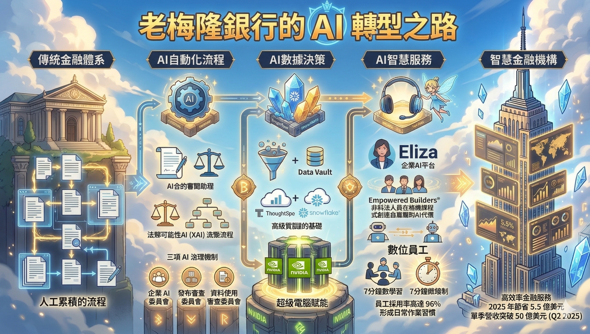

W0
為什麼要學 AI 自動化？
一個 240 年老銀行的 AI 轉型故事，告訴你答案
CASESTUDY
🏢 痛點變優勢 — 紐約梅隆銀行的 AI 轉型之路
如果有人告訴你，一家擁有 240 年 歷史、管理著全球 57.8 兆美元 資產的老牌銀行，能在短短幾年內讓 96% 的員工每天使用 AI 工具，你或許會覺得這是科幻情節。
但這正是紐約梅隆銀行（BNY）真實發生的故事。
資料來源：台灣經濟研究院 永續學院 — 副研究員 鄧翔靖（2026/03/12）

🏢
240
年歷史
💰
57.8兆
美元資產
🤖
96%
員工每日用 AI
📈
125+
AI 應用上線
💲
$5.5億
年省效益
BNY 的 AI 轉型時間線
▼| 年份 | 里程碑 | 內容 |
|---|---|---|
| 2019-2020 | 打地基 | 建立「Data Vault」資料管理平台，用機器學習整合分散資料 |
| 2023 | 組建團隊 | 成立「AI Hub」，集結資料科學家，盤點業務痛點 |
| 2024 | 平台上線 | 推出企業 AI 平台「Eliza」，整合 125+ 個 AI 應用，年底 35% 採用率 |
| 2025 上半 | 全員普及 | 採用率飆升至 96%，單季營收破 50 億美元，年省 5.5 億 |
三大關鍵啟示
- AI 不只是工具，而是基礎設施 — 先打造資料底座，再讓 AI 進入日常工作流程
- 治理架構才是護城河 — 在監管環境中用制度與文化確保可控創新
- 如果 240 年的老銀行都能做到，各行各業都能成功
跟你有什麼關係？
- BNY 花了上億建 Eliza → 你只要 NT$3~68/月就能做自己的 AI 助理
- 這門課帶你做一個 LINE 個人助理：記帳 + 行事曆 + 名片紀錄
- 不需要是工程師 → n8n 拖拉連線 + AI 意圖辨識就能完成
- BNY 的路：打地基→建平台→全員用。你的路也一樣 ↓
成本分析：LINE 助理要花多少錢？
▼🎯 個人用（~500 則/月）
| 項目 | 方案 | 月費 |
|---|---|---|
| LINE Messaging API | 免費（Reply 無限免費） | NT$0 |
| AI 意圖辨識 | GPT-4o-mini | ~NT$3 |
| n8n 主機 | Oracle Cloud 免費 / 便宜 VPS | NT$0~65 |
| 資料庫 | Google Sheets | NT$0 |
| 網域 + SSL | 免費子網域 + Let's Encrypt | NT$0 |
| 合計 | NT$3~68/月 | |
🏢 小團隊（5-10 人，~3000 則/月）
| 項目 | 方案 | 月費 |
|---|---|---|
| LINE | 免費或輕用量 NT$800 | NT$0~800 |
| AI | GPT-4o-mini | ~NT$20 |
| n8n 主機 | Hetzner VPS | ~NT$135 |
| 資料庫 | Supabase 免費 | NT$0 |
| 合計 | NT$155~955/月 | |
💡 關鍵省錢秘訣：LINE 的 Reply 訊息完全免費！使用者傳訊給 bot → bot 回覆 = 不計費。個人助理幾乎零成本。
LINE 訊息
使用者傳話
使用者傳話
➡
AI 意圖辨識
記帳?行事曆?名片?
記帳?行事曆?名片?
➡
Switch 分流
三條路
三條路
➡
Google Sheets
存資料
存資料
➡
LINE Reply
回覆確認
回覆確認